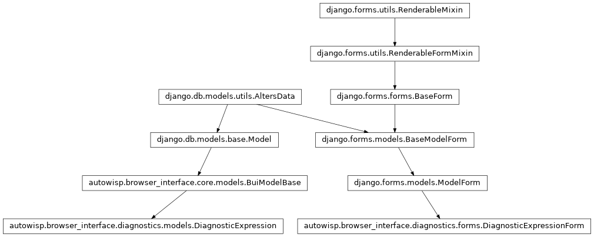
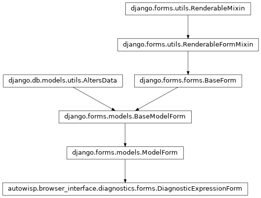

autowisp.browser_interface.diagnostics.forms module
Class Inheritance Diagram

The form behind the diagnostic expression management page.
A ModelForm rather than hand-written POST handling, which is a new
pattern in this interface and a deliberate one. The name charset, the
uniqueness of the name, the create-versus-update branch and the per-field
error plumbing are all things Django already does correctly, and each one
written out by hand would be another thing to keep right.
What Django cannot know is whether the expression means anything. That
is check_expression(), which
returns its complaints as plain strings rather than raising so that it
stays usable with no Django at all – import, and one day the command
line, reach it by the same path. Turning those strings into a
ValidationError is this module’s whole reason to exist, and the only
place that adaptation happens.
- class autowisp.browser_interface.diagnostics.forms.DiagnosticExpressionForm(*args, expressions=None, **kwargs)[source]
Bases:
ModelForm
Validate one proposed expression against the library it would join.
No project is involved. An expression is valid or not in every project alike – see
autowisp.diagnostics.diagnostic_types– and whether the open project has recorded what it needs is a separate question, answered by counting rows elsewhere. So this form works with no project open, which is part of what makes one global library coherent.- class Meta[source]
Bases:
objectThe three user-editable columns of the model.
- fields = ['name', 'expression', 'description']
- model
alias of
DiagnosticExpression
- widgets = {'description': <django.forms.widgets.TextInput object>, 'expression': <django.forms.widgets.TextInput object>}
- __init__(*args, expressions=None, **kwargs)[source]
- Parameters:
expressions (dict) – The library,
{name: expression}, this one would join. The view has it and the form does not, so it arrives as a keyword argument. An entry of the same name is treated as the one being replaced rather than as a conflict, so an edit can pass the library unchanged.
- bare_aggregates
The NaN-propagating aggregates the accepted expression calls, for the view to warn about. Not an error: a deliberate
medianis a legitimate thing to write, it is merely almost never what was meant.
- base_fields = {'description': <django.forms.fields.CharField object>, 'expression': <django.forms.fields.CharField object>, 'name': <django.forms.fields.SlugField object>}
- declared_fields = {}
- property media
Return all media required to render the widgets on this form.